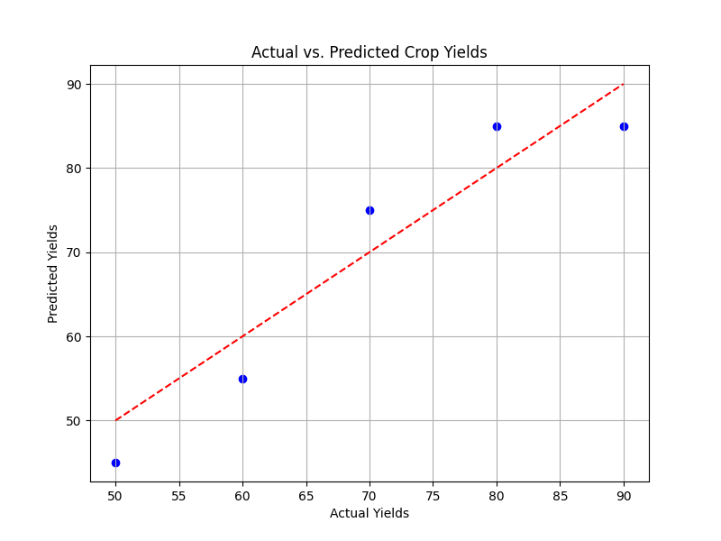

Mean Squared Error (MSE)
Loss Functions in Neural Networks
In the context of neural networks, a loss function is a measure of how well the network is performing its task. It quantifies the difference between the predicted output of the network and the actual output (i.e., ground truth). The goal of training a neural network is to minimize this difference, thus minimizing the loss.
Why Are Loss Functions Important?
Loss functions serve as a guide for the neural network during training. By computing the loss and adjusting the network's parameters (weights and biases) based on this loss, the network learns to make better predictions over time.
Types of Loss Functions:
- Mean Squared Error (MSE): This is one of the most commonly used loss functions, especially in regression problems. It calculates the average of the squared differences between the predicted and actual values.
- Binary Cross-Entropy Loss: Used for binary classification problems, where the output is either 0 or 1. It measures the difference between the predicted probability distribution and the true distribution.
- Categorical Cross-Entropy Loss: Similar to binary cross-entropy loss but used for multi-class classification problems. It computes the difference between the predicted probability distribution and the true distribution across multiple classes.
- Sparse Categorical Cross-Entropy Loss: Similar to categorical cross-entropy loss but more efficient when dealing with sparse labels.
- Hinge Loss: Commonly used in support vector machines (SVMs) and for binary classification tasks. It penalizes incorrect classifications by a margin.
- Kullback-Leibler Divergence (KL Divergence): Measures how one probability distribution diverges from a second, expected probability distribution.
Choosing the Right Loss Function:
The choice of loss function depends on the nature of the problem you're solving. For example, if you're dealing with a regression problem, MSE might be a good choice. If you're working on a classification problem, cross-entropy loss functions are typically more suitable.
In Summary:
Loss functions play a crucial role in training neural networks by quantifying the disparity between predicted and actual outputs. Understanding and selecting the appropriate loss function is essential for effectively training a neural network for a given task.
Mean Squared Error (MSE)
Mean Squared Error (MSE) is a commonly used metric to measure the performance of a neural network model, particularly in regression tasks. It quantifies the average squared difference between the actual values and the predicted values produced by the model.
Definition
MSE is calculated by taking the average of the squared differences between the predicted and actual values for each data point in the dataset. It's represented by the formula:
MSE = ∑i=1n (yi - ^yi)2 / n
Where:
- n is the number of data points.
- yi is the actual value for the ith data point.
- ^yi is the predicted value for the ith data point.
When to Use MSE
MSE is commonly used when dealing with regression problems, where the goal is to predict a continuous outcome. It's especially useful when the dataset contains outliers since squaring the errors penalizes larger deviations more heavily.
Why to Use MSE
MSE provides a measure of how well the model's predictions match the actual values. Minimizing MSE during the training process helps to improve the accuracy of the model's predictions.
How to Use MSE
To use MSE, you need to train your neural network model using an optimization algorithm (e.g., gradient descent) to minimize the MSE loss function. During training, the model adjusts its parameters to minimize the difference between the predicted and actual values, thereby reducing the MSE.
When Not to Use MSE
While MSE is widely used, it has some limitations. One major limitation is its sensitivity to outliers, which can skew the metric and affect model evaluation. In cases where outliers are a concern, other loss functions like Mean Absolute Error (MAE) or Huber loss might be more appropriate.
Identifying Loss
MSE quantifies how well the model is performing by measuring the average squared difference between predicted and actual values. A lower MSE indicates that the model's predictions are closer to the actual values, whereas a higher MSE suggests poorer performance.
In Summary
In summary, MSE is a valuable tool for assessing the performance of regression models in neural networks. It helps in training the model by guiding the optimization process to minimize the squared differences between predictions and actual values, thus improving the model's accuracy. However, it's essential to be mindful of its sensitivity to outliers and consider alternative loss functions in such cases.
Adjusting Loss in Neural Networks:
- Adjustment Process: Adjusting the loss (in this case, the Mean Squared Error, or MSE) in a neural network involves updating the model's parameters (weights and biases) during the training process to minimize this loss. This is typically achieved through an optimization algorithm, such as gradient descent, which iteratively adjusts the parameters in the direction that decreases the loss.
- Initialization: Start by initializing the weights and biases of the neural network randomly or using predefined values.
- Forward Pass: Pass input data through the neural network to make predictions.
- Loss Calculation: Calculate the loss (in this case, MSE) between the predicted values and the actual values.
- Backpropagation: Compute the gradients of the loss function with respect to the model's parameters using backpropagation. This step determines how each parameter should be adjusted to reduce the loss.
- Parameter Update: Update the weights and biases of the model using an optimization algorithm, such as gradient descent, to move them in the direction that minimizes the loss. The size of the update is determined by the learning rate hyperparameter.
- Repeat: Iterate through steps 2-5 for a specified number of epochs or until convergence.
Additional Considerations for Adjusting Loss:
- Learning Rate: Choosing an appropriate learning rate is crucial. Too high a learning rate may cause the model to overshoot the minimum, while too low a learning rate may result in slow convergence.
- Regularization: Techniques like L1 or L2 regularization can be applied to prevent overfitting and improve generalization.
- Model Architecture: Experimenting with different architectures, such as adding or removing layers, changing the number of neurons, or using different activation functions, can also affect the loss.
- Data Preprocessing: Properly preprocessing the data, such as scaling or normalizing features, can help improve convergence and reduce the loss.
Overall, adjusting the loss involves a combination of optimizing hyperparameters, tuning the model architecture, and fine-tuning the training process to achieve the desired performance.
Crop Yield Prediction Example:
To demonstrate how Mean Squared Error (MSE) can be used to measure the loss in a crop yield prediction model, let's consider a simplified example:
Suppose we have a dataset containing information about various crops, including features such as weather patterns, soil quality, and crop type, as well as the corresponding actual crop yields. We train a regression model on this dataset to predict crop yields based on these features.
Simplified Dataset:
| Weather Patterns |
Soil Quality |
Crop Type |
Actual Yield |
Predicted Yield |
| Sunny |
Good |
Wheat |
50 tons |
45 tons |
| Rainy |
Poor |
Rice |
70 tons |
75 tons |
| Sunny |
Excellent |
Maize |
90 tons |
85 tons |
| Rainy |
Moderate |
Wheat |
60 tons |
55 tons |
| Sunny |
Good |
Rice |
80 tons |
85 tons |
In this simplified dataset:
- We have information about various crops, including Wheat, Rice, and Maize.
- For each crop, we have recorded the weather patterns, soil quality, the actual yield, and the predicted yield by our regression model.
This dataset will be used to demonstrate how Mean Squared Error (MSE) can measure the loss between the actual and predicted crop yields.
Crop Yield Prediction Example:
To calculate the Mean Squared Error (MSE) loss for this crop yield prediction model, we follow these steps:
- Squared Differences: Calculate the squared difference between each predicted yield and its corresponding actual yield:
- For the first row: \( (45 - 50)^2 = 25 \)
- For the second row: \( (75 - 70)^2 = 25 \)
- For the third row: \( (85 - 90)^2 = 25 \)
- For the fourth row: \( (55 - 60)^2 = 25 \)
- For the fifth row: \( (85 - 80)^2 = 25 \)
- Sum of Squared Differences (SSD): Sum up all the squared differences:
- SSD = \(25 + 25 + 25 + 25 + 25 = 125\)
- Mean Squared Error (MSE): Compute the average of the squared differences, which gives us the MSE:
- MSE = \(\frac{SSD}{n} = \frac{125}{5} = 25\)
So, the Mean Squared Error (MSE) for this example is 25. This indicates the average squared difference between the predicted crop yields and the actual crop yields in the dataset. A lower MSE indicates better performance, as it implies that the model's predictions are closer to the actual values.

Overall, by visually inspecting the scatter plot, we can assess how well the crop yield prediction model is performing and identify areas for improvement. If the points cluster closely around the diagonal line, it indicates that the model is making accurate predictions.
Approaches to Improve Crop Yield Prediction Model:
To adjust the loss, or in other words, to improve the performance of the crop yield prediction model and reduce the Mean Squared Error (MSE), there are several approaches you can consider:
- Feature Engineering: Analyze and identify additional features that may have a significant impact on crop yields, such as climate data, agricultural practices, or pest management techniques. Incorporating relevant features into the model can improve its predictive capability.
- Model Selection: Experiment with different regression models or machine learning algorithms to find the one that best fits the data and minimizes the MSE. This may involve trying linear regression, decision trees, random forests, or more advanced techniques like gradient boosting or neural networks.
- Hyperparameter Tuning: Optimize the hyperparameters of the chosen model to improve its performance. This involves adjusting parameters such as learning rate, regularization strength, tree depth, or number of layers in a neural network to achieve better results.
- Data Preprocessing: Clean and preprocess the dataset to handle missing values, outliers, or skewed distributions. Standardizing or normalizing the features can also help improve model performance.
- Ensemble Methods: Combine predictions from multiple models using ensemble techniques such as bagging, boosting, or stacking. Ensemble methods can often improve prediction accuracy by leveraging the strengths of different models.
- Cross-Validation: Use cross-validation techniques to assess the generalization performance of the model and prevent overfitting. Cross-validation helps ensure that the model's performance is robust and not overly influenced by the specific training-test split.
- Regularization: Apply regularization techniques such as L1 or L2 regularization to prevent overfitting and improve model generalization. Regularization penalizes overly complex models, leading to more robust and interpretable results.
- Feature Selection: Identify and select the most relevant features that have the greatest impact on crop yields. Removing irrelevant or redundant features can simplify the model and improve its performance.
By iteratively applying these strategies and evaluating the model's performance, you can adjust the loss and enhance the accuracy of the crop yield prediction model, ultimately reducing the Mean Squared Error (MSE).